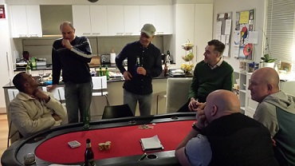
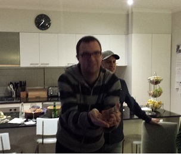

...oh, and a game of poker!
|
| Position | Name | Points | Won |
|---|---|---|---|
| {{result.position}}{{positionSuffix(result.position)}} | {{result.name}} | {{result.points}} | {{result.cash | currency}} |
| Position | Name | Played | Won | Win Ratio | Ave Points | Ave Position | Points |
|---|---|---|---|---|---|---|---|
| {{$index + 1}}{{positionSuffix($index + 1)}} | {{result.name}} | {{result.played}} | {{result.won}} | {{result.won / result.played * 100| number:2}} % | {{result.points / result.played | number:2}} | {{result.averagePosition | number:2}} | {{result.points}} |
9 players descended upon Steve's house for the 5th of 9 events for the 2015 poker calendar year. Jade flying in from Sydney, was a known late starter, but the remaining 8 players eagerly devoured the slow cooked lamb and readied themselves for the night ahead.
With seating randomly allocated, the super bonus player was selected, with Ben being the "chosen one" for the 3rd time, knowing that a 3 digit windfall was in the wind if he were to win the nights event.
Unlike many other events, Ben came flying out of the blocks, raising pre-flop, but came unstuck against Brian who took the pot. Another raise in the second hand saw him come off second best against Mark L, who took the decent early pot with his A9, after hitting the nine against Ben's infamous AK (Anna Kournikova - looks good, but rarely wins). Not to be put off by his unlucky start, a minimum raise in the 3rd hand saw him go into battle with Mark V. With two tens on the board, Ben was worried that Mark was holding another 10, but as Mark was chasing a straight, Ben let his cards do the talking as he smashed down his pocket Aces in a demonstration of relief that he had won a pot at the 3rd time of asking.
Soon after, Simon was squaring off against Mark L, and with four diamonds on the board, Mark's raise made Simon lay his low diamond down. Mark didn't show his cards, which instigated the response "You're a cock head" from his beleaguered opponent.
Paul eventually joined in the game after lots of folding, but had to fold again as Steve and Carlos both inflated the pot with their betting after the flop showed K,4,9. Steve with two pair (K-4), versus Carlos two pair (K-9), meant that a disconsolate laden parcel was in the post for Steve.
With blinds at 75/150, Simon hit an Ace high flush on the river card and was happy to have his 2,000 raise called by Mark V, who had a pair of sixes. It wasn't all elation for Simon though, as he dispursed some of his winnings again to Mark L who managed to hit a straight on the river and take out Simons pocket Queens.
Another straight saw both Steve and Carlos split a pot, but the following had was instigated by a raise to 400 from Mark L. The recently seated Jade who had now joined in the merrymaking re-raised to 800. Not to be outdone by the bravado, Simon re-raised again to 1600. Both Mark and Jade called, and by the river, Jade had a pair of 10's, Mark V two pair, but Simon took down the capacious stockpile of chips with a straight.
Again, Simons boomerang chips found themselves back to other players stacks as he came unstuck against Carlos and Jade.
The last hand of of the first hour saw Simon move his remaining chips into the middle after Brian had pushed all in with AK, but for once, AK held and Brian was the happy recipient of Simons last chips. Mark V was also now down to only 100, but after some AFL viewing during the break and with the chip stacks restocked, players could now start the serious stuff with the increased blind levels.
Brian soon won an early pot after showing a bluff, after raising pre-flop, and continuation betting (c-bet) the flop despite his A-J not hitting the low board.
Jade's stack soon took a pummeling, after he re-raised Steve's $1000 bet on the river to $2000. Steve called, and turned over a full house against Jade's Ace high. Maybe a re-reaise or an all-in from Steve "might" have acquired even more chips?
Ben had been quiet for a while, but upped the betting ferocity after betting $5,000 into a $3,000 pot after a low flop. He was a confident of taking down the chips, but to his consternation, Paul called. With a board of 8,9,8,5, Ben pushed in his remaining chips, and Paul called again. With one card to come, both players exposed their cards with Ben holding KK, and Paul holding AA. The crowd erupted with amazement, and Ben was looking down the barrel of either an early exit or a re-buy. The final card was dealt, and with no King to save Ben, his wallet surfaced to augment the prize pool.
In fact, it wasn't long before the pocket rockets moved over to Simon who took a generous dollop of Mark V's chips as a result. Jade was flittering between folding his starting cards and watching the ashes, mumbling under his breath about something "not quite right", and Carlos was still keeping busy, by knocking Ben off his hand, after re-raising Ben on the river.
Into the 3rd hour with blinds at the foreboding level of 600/1200 with a 100 ante, saw Mark V, Ben and Carlos in another battle. Mark V was nonchalantly chatting about the housing market whilst raising on each street. Ben was calling each raise, but Carlos soon folded. With most people thinking Marks casual style was part of a poker disguise, the crowd was shocked to see Ben take down the pot with a straight with Mark only a pair.
Jade expanded his depleted chip towers with a nice win after a $5,000 win on the river. Jade also spent what seemed an eternity to decide what to do after another strong $5,000 raise by Carlos. Eventually, despite some generous coaching from the crowd about what to do, folded. Not a hand for the highlights reel! Carlos had been busier than the monash freeway during rush hour, leading to Mark L giving him the moniker "Venomous Whale", or was that "Venezualen Male" after Carlos beat Simon's pocket 4's with his ladies (pocket Queens).
|  |
| ................Post match game analysis................ |
With 9 players remaining, and with pot sizes now so grandiose that any win would provide more relief than a happy ending at a dodgy massage parlour, Brian pushed all in with AK (did he forget about Anna?). Simon whose chip stack was also in the danger zone called with A7, and fortunately for Brian, his cards held and Simon became the first casualty. The pre-game email confidence had been eroded quicker than slab at BBQ night, as his first place in the previous tournament was complemented with 1 point and last place.
After the third break with blinds at $2000/$4000 with an $500 ante, Jade soon found himself with only $500 left after the fickle AK didn't hit, and Carlos J-10 hitting a 10 on the river. The next hand Jade could only post the ante, and with Carlos again winning with his A-10 against Mark L's A-7 meant Carlos was now the chip leader, and Jade was consigned to an 8th place finish.
Mark V, was also bereft of chips, and so pushed in all his remaining chips with pocket 2's. Ben called with the infamous AK, but for once, Anna must have been having a resurgence of skill, as a K hit on the flop, and with no two forthcoming on the turn or river, Mark was booted out in 7th.
As usual at this point of the tournament, each move had major ramifications on survival, and with Mark L gratefully spying an Ace in his hole cards, he pushed all in, with A-9. Everyone folded except chip laden Carlos, who took on Mark with his K-6. Those Kings were being kind to players, as again one turned up on the flop, and Mark L was applauded for this 6th place finish.
The remaining five players meant the cash bubble was now making its precense felt. With Paul, Steve and Carlos going into battle, both Steve and Carlos split the pot, but knocked out Paul in the process. Unlucky Paul.
|  |
| ................2nd place Ben showing da cash................ |
Carlos was involved in more hands than a glove fitting shop, but lost a large pot against Steve who hit a straight on the river. Steve's stack now had some protection, and so when Brian pushed all in with A-4d, Steve called with A-10o. With two diamonds by the turn, Brian prayed to the poker gods, but his prayers went unheard and with no diamond forthcoming, was dumped out of the tournament in 4th, but taking out the first cash and extra bonus points.
Ben, Carlos and Steve now took on the final three placings, and with Ben the super bonus still being in, meant more pressure than a Premier league manager in the relegation zone. Again, Carlos was not shying away from hands, and took out Steve who was resigned to third place. Steve now has the amazing statistic of finishing in 3rd place 7 times (his personal best), 3 more than any other player.
The heads-up finale between Ben and Carlos created a tentative game of folding, or checking, with Ben hoping for the win and super bonus windfall, and Carlos hoping for his first win.
Eventually both players had a reasonable hand, and with Ben behind in chips, Carlos called Ben's all-in. Unfortunately for Ben, Carlos hand took down the final pot, and players applauded the hard fought game and congratulated Carlos on his stellar performance.
So, after the points were tallied, the ladder shows Ben moving up two places and returning to top spot (47), with a healthy 9 point buffer to Mark L (38) who stays in second spot. Simon drops down from 1st to 3rd (36), with Brian staying in 4th with (33). Other notable movers and shakers see Steve move up 5 places to 5th (27) and Carlos moving up 4 places to 10th (19), but only having played 2 games.